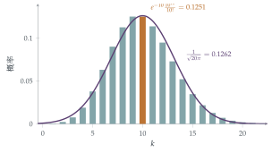

STEP II 2016，第 13 题
继续之前，请先阅读题目（原题为英文）。题目载于 STEP Support Programme 的题目资料库： step.maths.org/questions/16-s2-q13
引子
\(100!\) 有多大？要逐项乘出来得花点工夫：它有 \(158\) 位数字。斯特灵公式（Stirling’s formula） \(n! \approx \sqrt{2\pi n}\,(n/e)^n\) 只用一行，就能给出误差在 \(0.1\%\) 以内的答案。它是数学中最有用的近似式之一，在概率（probability）、统计物理和算法分析中经常用到。
它有很多种证明（proof），可以用积分（integral）（第 4.4 节），也可以用欧拉–麦克劳林公式（Euler–Maclaurin formula）。本题给出的是最出人意表的一种：用概率来证明。平均值（mean）为 \(n\) 的泊松分布（Poisson distribution）近似于正态分布（normal distribution），在峰顶比较两者，\(n!\) 的值就被确定下来。斯特灵公式中的 \(\sqrt{2\pi}\)，正正就是正态密度（normal density）中的 \(\sqrt{2\pi}\)。
动笔之前
设离散随机变量（discrete random variable）\(X\) 的平均值为 \(\mu\)、方差（variance）为 \(\sigma^2\)，并且近似于正态分布，那么 \(\mathrm{P}(X = \mu)\) 大约是多少？（试想一个宽度为 \(1\)、以 \(\mu\) 为中心的区间的概率。）
按正态近似（normal approximation），\(\mathrm{P}(X = \mu) \approx \mathrm{P}(\mu - \frac12 < X < \mu + \frac12)\)，这大约等于宽度 \(1\) 乘以峰顶处的密度：\(\frac{1}{\sigma\sqrt{2\pi}}\)。
逐步解题
阶段 1 十六枚硬币
\(X \sim \mathrm{B}(16, \frac12)\) 的平均值为 \(8\)，方差为 \(16 \cdot \frac12 \cdot \frac12 = 4\)，所以 \(\sigma = 2\)。由正态近似， \[\mathrm{P}(X = 8) \approx \frac{1}{2\sqrt{2\pi}} \approx 0.1995.\] 准确值是 \(\binom{16}{8}/2^{16} = \frac{12870}{65536} \approx 0.1964\)，两者相差不到 \(2\%\)。
阶段 2 中央二项式系数
\(\mathrm{B}(2n, \frac12)\) 的平均值和标准差（standard deviation）是多少？分别写出 \(\mathrm{P}(X = n)\) 的准确值和近似值。
平均值是 \(n\)，方差是 \(\frac n2\)，所以 \(\sigma = \sqrt{n/2}\)。准确值是 \(\mathrm{P}(X = n) = \binom{2n}{n}\frac{1}{2^{2n}}\)；近似值是 \(\frac{1}{\sqrt{n/2}\sqrt{2\pi}} = \frac{1}{\sqrt{\pi n}}\)。令两者相等， \[\frac{(2n)!}{(n!)^2\,2^{2n}} \approx \frac{1}{\sqrt{\pi n}}, \qquad (2n)! \approx \frac{2^{2n}(n!)^2}{\sqrt{n\pi}}. \qed\]
阶段 3 斯特灵公式
参数为 \(n\) 的泊松分布，其平均值和方差都等于 \(n\)。分别写出 \(\mathrm{P}(X = n)\) 的准确值和近似值。
准确值是 \(\mathrm{P}(X = n) = e^{-n}\frac{n^n}{n!}\)。当 \(n\) 很大时，泊松分布近似于正态分布（它是 \(n\) 个独立的 Poisson\((1)\) 变量之和），其中 \(\sigma = \sqrt n\)，所以 \(\mathrm{P}(X = n) \approx \frac{1}{\sqrt{2\pi n}}\)。令两者相等， \[n! \approx \sqrt{2\pi n}\,e^{-n}n^n. \qed\]

回顾
一点上的概率 \(\approx\) 密度乘以宽度。对于格点分布（lattice distribution），某一点上的正态密度近似于该点的概率。
准确公式遇上近似式。二项分布（binomial distribution）和泊松分布的概率是准确的；令它们等于各自的正态近似，便得到阶乘（factorial）的估计。
按公式的形状选择分布。\(\binom{2n}{n}\) 令人想到 \(\mathrm{B}(2n, \frac12)\)；\(\frac{n^n}{n!}\) 令人想到 Poisson\((n)\)。
背后的数学
这个近似有多准确？
这个论证只是启发式（heuristic）的：它在单独一点上使用正态近似，而一般的中心极限定理（central limit theorem）并不足以支持这样做。它有一个严格的版本，称为局部中心极限定理（local central limit theorem），所做的正是这件事，并使这个论证成为真正的证明。斯特灵公式其实出奇地准确：比值 \(\frac{n!}{\sqrt{2\pi n}(n/e)^n}\) 大约是 \(1 + \frac{1}{12n}\)，所以即使 \(n = 1\)，它给出的也是 \(0.92\) 而不是 \(1\)；而当 \(n = 10\) 时，它只偏小了 \(0.8\%\)。完整的级数（series）\(1 + \frac{1}{12n} + \frac{1}{288n^2} - \cdots\) 是渐近级数（asymptotic series）的一个例子：对于大的 \(n\)，它给出的近似值越来越好；但对于固定的 \(n\)，它最终会发散（diverge）。
阶乘与正态分布为何相连
斯特灵公式和正态密度中的 \(\sqrt{2\pi}\) 是同一个常数，因为 \(\int_{-\infty}^\infty e^{-x^2/2}\,\mathrm{d}x = \sqrt{2\pi}\)。棣莫弗（Abraham de Moivre）在 1733 年正是循这条路找到二项分布的正态近似的：他需要在 \(n\) 很大时近似 \(\binom{n}{k}\)；他找到了 \(n! \approx Cn^{n + 1/2}e^{-n}\) 这个形式，却没有找到那个常数。斯特灵（James Stirling）证明了 \(C = \sqrt{2\pi}\)。正态分布是从阶乘的渐近性质中诞生的。
棣莫弗是一位逃亡到伦敦的法国新教徒，靠当私人教师和为赌徒出谋献策维生。他在 1718 年出版了 The Doctrine of Chances（《机会论》），并在 1733 年的一本小册子中找到二项分布的正态近似，这是正态曲线首次面世。苏格兰数学家斯特灵在他的 Methodus Differentialis（1730）中发表了该常数的值，棣莫弗亦大方地把功劳归于他。阶乘的近似至今仍是活跃的课题：组合数学（combinatorics）和密码学（cryptography）都需要对极大的 \(n\) 计算 \(n!\)。
思维技巧
把一个准确的概率与一个近似值作比较，可以得知公式中那些数的信息。
这种“概率方法（probabilistic method）”是双向的。这里概率给出了阶乘的估计；艾狄胥（Erdős）则用它来证明某些图（graph）的存在（第 9.2 节）。到了大学，你会见到概率被用来证明分析、数论和组合数学中的定理。
延伸练习
检验公式。用斯特灵公式估计 \(10!\) 和 \(20!\)，并与真确值 \(3\,628\,800\) 和 \(2\,432\,902\,008\,176\,640\,000\) 比较。
由 (iii) 到 (ii)。证明第 (iii) 部分的斯特灵公式可推出第 (ii) 部分的近似式。
\(100!\) 的位数。利用 \(\log_{10}n! \approx n\log_{10}\frac ne + \frac12\log_{10}(2\pi n)\) 证明 \(100!\) 有 \(158\) 位数字。
掷硬币打成平手。利用第 (ii) 部分，证明掷一枚公平硬币 \(1000\) 次而恰好得到 \(500\) 次正面的概率约为 \(0.025\)。
延伸阅读
William Feller, An Introduction to Probability Theory and Its Applications, Vol. 1（Wiley），第 II 章，当中证明了斯特灵公式。
Ronald Graham, Donald Knuth & Oren Patashnik, Concrete Mathematics（Addison-Wesley），第 9 章，讲述渐近分析。
Stephen Stigler, The History of Statistics（Harvard University Press），讲述棣莫弗与正态曲线的诞生。